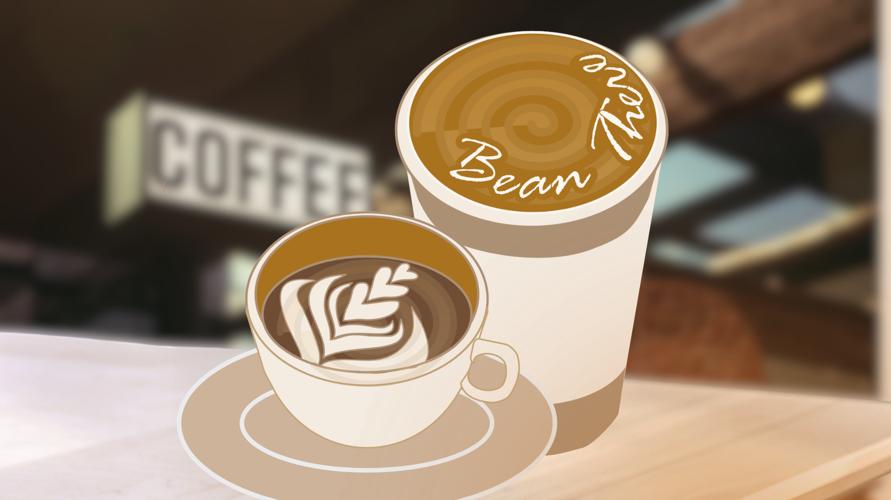

Good coffee doesn't hide — you just need the right map.
A café guide where honest reviews and real experiences help you discover your next favorite coffee spot.
Browse the GuideThe Field Guide
Six of our favorite spots, sorted by what kind of coffee hunt you're on today.
Don Macchiatos
A cozy café with deep armchairs, quiet spaces, and a smooth, nutty house blend.
Emmanuel's Cafe
A quick coffee stop serving a rich cortado for those who need great coffee on the go.
Wraps Coffee
A friendly shared-table café with freshly rotating filter coffee that always brings something new.
Lot 62
A hidden café worth the drive, with freshly roasted beans and an aroma that makes every visit memorable.
Sans Cafe
A bright and welcoming café serving espresso that stays delicious even with oat milk.
Big D. Coffee & Tea Hub
A relaxing spot by the water offering slow-steeped cold brew and tempting pastries.
Behind the Scenes
The crew doing the tasting, typing, and occasional over-caffeinating.